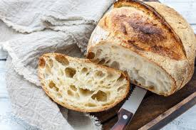

Country Sourdough

Look at that tasty cooked dough! Wowza!
How does one cook such a loaf?
Beats me!
But here's my best attempt.
Ingredients
Steps
- Mix all the ingredients in a bowl.
- Form the dough into a bread shaped object.
- Place bread shaped object in a dutch oven.
- Bake at 500 degrees Fahrenheit for 30 minutes.
- Let cool, and enjoy!